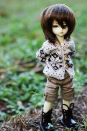
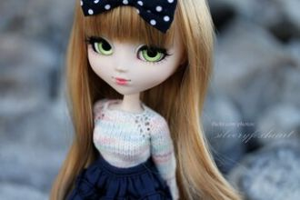

On a dark desert highway, cool wind in my hairWarm smell of colitas, rising up through the airUp ahead in the distance, I saw a shimmering light
Oh the wind whistles down The cold dark street tonight And the people they were dancing to the music vibe
When you were here before Couldn't look you in the eye You're just like an angel Your skin makes me cry
In my eyes, indisposedIn disguises no one knowsHides the face, lies the snakeAnd the sun in my disgraceBoiling heat, summer stench
Больше нечего ловитьВсё, что надо, я поймал,Надо сразу уходить,Чтоб никто не привыкал.
Как упоительны в России вечера!Любовь, шампанское, закаты, переулки.Ах, лето красное, забавы и прогулки!Как упоительны в России вечера.
Подними глаза в рождественское небо,Загадай всё то, о чём мечтаешь ты.В жизни до тебя я так счастлив не был.Для тебя одной, их так любишь ты,
Я уйду и не вернусьЯ уйду, а ты не ждиЯ уйду и не дождусьКогда кончатся дожди
Видеть тебя всегдаХочется мне сейчас,Мысли твои читатьВ каждом движенье глаз,А ещё иногдаСлышать дыханье так,
Смелый, как ветер, свободный я делал все, что душе угодно.Жил для себя год за годом крутой проявляя нрав.

Никогда этих снов.Никому этих слов.Только ветер знает,Там, где я БудуНавсегда, навсегда..Посмотри - мы не одни.

На твоих ладонях - солнце,Что так жарко обжигает.Небо надо мной смеётся,Столько счастья не бывает.Ты один такой на свете.
Freestyler, rock the microphoneStraight from the top of my domeFreestyler, rock the microphoneCarry on with the freestyler
Nager dans les eaux troublesDes lendemainsAttendre ici la finFlotter dans l'air trop lourdDu presque rienA qui tendre la main
Hey Hey, you you I don't like your girlfriend No way no way I think you need a new one Hey hey, you you I could be your girlfriend.
Life’s like this That’s the way it is
Cause life’s like this That’s the way it is
She's all you'll ever dream to find, On her stage she sings her story. Pain and hurt will steal her heart tonight, Like a queen in all her glory.
Я птицу счастья свою отпускаю на юг,Теперь сама я пою, теперь сама летаю.Ааа-а. У-ага е е.Ааа-а. У-ага е е.
Пусть говорят, мы редко видимся с тобой,В сердце всегда ты со мной, ты со мной.Пусть говорят, что не судьба нам быть вдвоём -
Позабудь об этом дне,Спор не нужен никому.Не читай нотаций мне,Мама, это ни к чему.